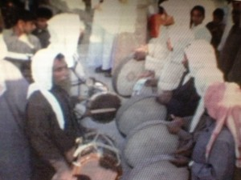

Articles >> March 2013
A Journey to "Home": An interview with the team behind
"Where is Home?"
Where is home? Many TCKs are faced with this existential question on a regular basis, but not all are able to answer it with certainty. The idea of home is often challenged, reactions ranging from saying it is nowhere, everywhere, or even that it changes constantly. It is one of the themes of self-examination that run through many TCKs' experiences, an ongoing journey with multiple resolutions.
In July 2011, TCKid hosted a mini festival of TCK-related short films in Toronto, featuring some of what would become popular films highlighting TCK experiences. One of these films was "Les Passagers", an emotional exploration of the identities and experiences of TCKs. Aga Alegria, the film's director and producer, shared her experiences live from Barcelona, Spain, and it has since become among the most-watched films about TCKs online.
Since then, Aga decided to expand on the stories shared in "Les Passagers", leading to the vision behind "Where is Home?", a documentary examining the experiences of TCKs and their search for "home." Aga and her production team - Producer Paul Saltzman, an Emmy Award-winning film and television producer and director, and Production Assistant, Alethea Wang, also a TCK - have high ambitions for "Where is Home?" and have since launched a fundraising campaign to support its goals of high quality editing and participation in major international film festivals. The campaign is ongoing on Indiegogo and ends on 7 March 2013.
TCKid took some time to talk to Aga and Alethea about "Where is Home?" and their campaign.
"Where is Home?" - Official Campaign Trailer from whereishomethefilm on Vimeo.
A still from "Where is Home?" Courtesy of Aga Alegria.
What was the inspiration behind "Where is Home?"?
Aga: I've spent most of my life living out of a suitcase. I think I've moved a total of about 21 times so far! But I've always struggled with my inability to stay in one place. This struggle became really difficult when I hit 30. I longed desperately to be content with my decision to settle down in Toronto to start a family. But I could still feel the restlessness inside me and having to constantly fight the restlessness was very tough on me emotionally.
What was worse was that I felt alone in my struggle! No one around me, not even myself, could understand why I was so restless. So one night I just started 'Googling' how I felt, and that's how I came across the Third Culture Kid community. I finally felt understood! I had found my 'tribe' and I was inspired to tell our story. More than anything, I wanted to know how others like me coped with being uprooted, with feeling torn between many different cultures, and whether or not we were able to find 'HOME' while remaining in constant motion.
Can you give us a brief synopsis of what "Where is Home?" is about and what issues will be explored?
Alethea: The film tells the stories of several adult Third Culture Kids while also following Aga's personal journey. To all of them, "Where is Home?" has been an extremely hard question to answer and each of them have embarked on an existential quest to find 'HOME'. The key issue that the film addresses is how to fashion a sense of 'HOME' or self when all the traditional coordinates are gone, and we aren't sure where our affiliations lie. How one comes to terms with the restlessness and ambivalence when those feelings are part and parcel of one's identity.
Another topic that we highlight is the positive qualities that arise due to moving between the wondrous diversity of cultures in our world. We'd like to share that with the world.
Talking about our experiences as TCKs can be both liberating and painful. How did it feel for you and the participants to work on the film?
Aga: I learned A LOT from listening to the wisdom shared by the participants in my film! Everyone was excited to have a safe outlet to share his or her story. But to get to the emotional root of our experiences, I had to push them to truly open up their hearts and talk about feelings they had mostly kept to themselves before.

A still from "Where is Home?" Courtesy of Aga Alegria.
Because the journey 'HOME' was such a struggle for all of us, having the opportunity to really speak out and share our experiences was extremely liberating! And for me, it allowed me to let go of the pain I felt inside and truly embrace the joys of having grown up as a Third Culture Kid. I think a lot of the participants would say the same.
It seems like a lot of people are making TCK-related films of different kinds, which is amazing! How will "Where is Home?" be different?
Alethea: Yes! There are several shorts that have come out in the past two years "Neither Here Nor There" by Emma Yamazaki, "So Where's Home?" by Adrian Bautista, (both documentaries) and "The Road Home" by our friend Rahul Gandotra (fictional, but based on personal experiences). All of these have been wonderful films that have highlighted Third Culture Kid identity.
On top of being the first feature length documentary, I think that the difference between our documentary and the others is that "Where is Home?" focuses in on exploring the concept of 'HOME' and how the search for home is necessarily different for those in constant movement.
I also feel that because Aga and most of the participants in the film have had a chance to live through the search for 'HOME', it has a different perspective then the other two documentaries. As a slightly younger TCK, I think this is really important to me because I want to have some foresight into what kind of obstacles, as well as rewards, might be in store for me as I continue to search for my own definition of 'HOME'.
Oh! And the film was shot in 5 different countries, so the viewer really does get a sense of movement and travel as they watch the film.
Back in 2011, TCKid hosted a global film screening event, streamed live from Toronto. One of those films was Aga's "Les Passagers". How does "Where is Home?" fit in or expand upon "Les Passagers"?
Aga: "Les Passagers" was made to map out the issues that Third Culture Kids face as a result of their mobile, cross-cultural upbringing - so like the other two shorts, it explores Third Culture Kid identity and gives the viewer a sense of what it's like to be a TCK.
Whereas "Where is Home?" - like Alethea mentioned - is really meant to create a dialogue and cause for reflection on what 'HOME' means in a globalized world. What does 'HOME' feel like? And why the journey 'HOME' is important.
We tried to make the message of "Where is Home?" a universal one.
A still from "Where is Home?" Courtesy of Aga Alegria.
Aga: Making "Where is Home?" has taken me four years and I've invested my entire heart and soul into it because I saw how 'Les Passagers' has really helped Third Culture Kids put their experiences into perspective, allowing us to connect with one another and feel understood. Our goal with "Where is Home?" is to expand on that connection to include people who are not necessarily Third Culture Kids but who also feel 'lost' in our increasingly complex global society. This film has been almost exclusively funded out of my own pocket so far, so I really do need the financial support to finish the post-production editing.
Alethea: Right, we've launched a crowd-funding campaign on Indiegogo, where you can make a donation to help with post-production of our film. It's more like an investment really, because your donation comes with a perk, such as getting a copy of the DVD once it's released!
We also love hearing from all the TCKs out there so please connect with us on Facebook, Twitter, Tumblr, and WordPress. Also, because our goal is to eventually submit the film to film festivals, any sort of publicity is great. So, if you know of any organizations who might be interested in "Where is Home?", please let us know!
Posted in Third Culture Kids News
Tagged with Aga Alegria, Alethea Wang, cross cultural kid, documentary, fundraiser, home, Indiegogo, TCK, third culture kid, Where is Home?